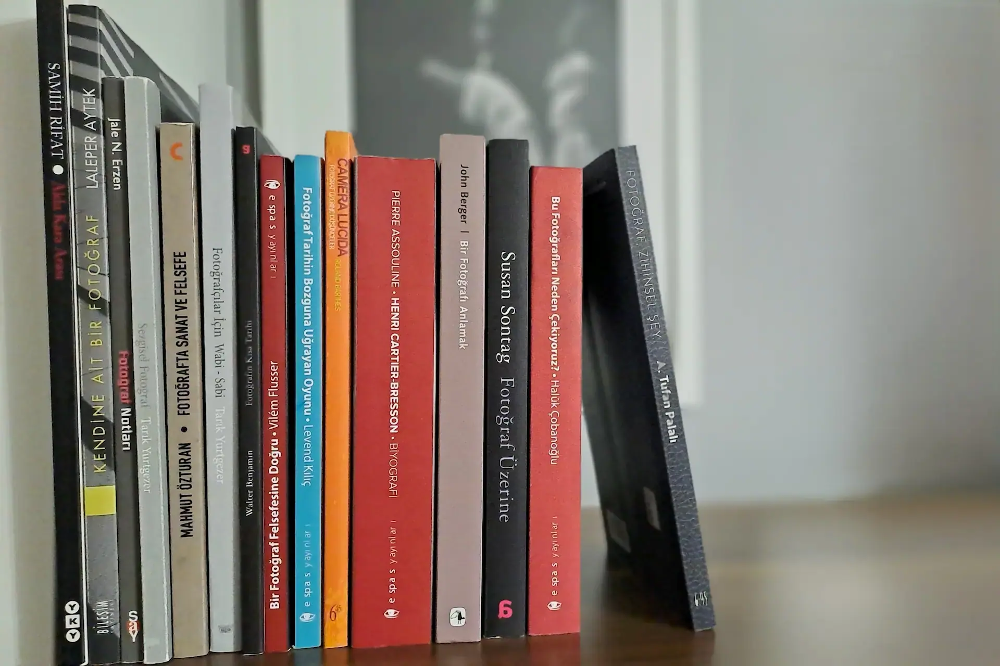

28 Ocak 2026 • Kuram
Gözün Ardındaki Zihin
Fotoğrafla olan ünsiyetimiz, çoğunlukla bir makineyi dizginleme arzusuyla başlar. Ancak vizörden bakarken gördüğümüz aslında kendi iç dünyamızdır...
Okumaya Devam Et